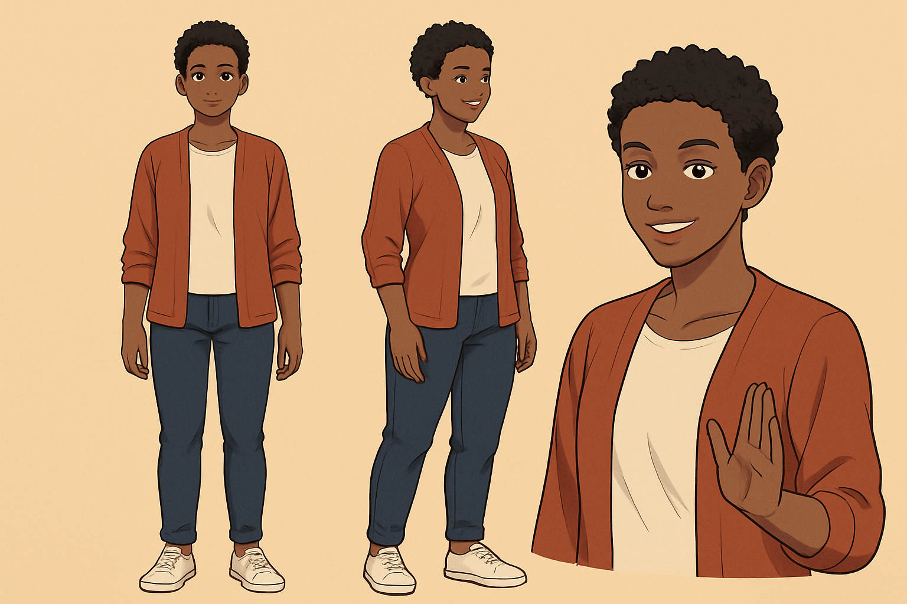

Mara
neighbor, classmate, friend, casual helper
Black woman, late 20s, tall athletic build, deep brown skin, short natural curls. Rust cardigan, cream shirt, dark jeans, simple canvas sneakers. Warm, confident, easy smile.
mara-reference.png